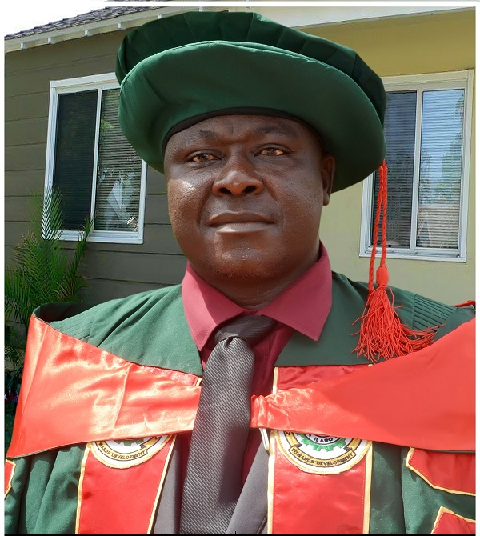
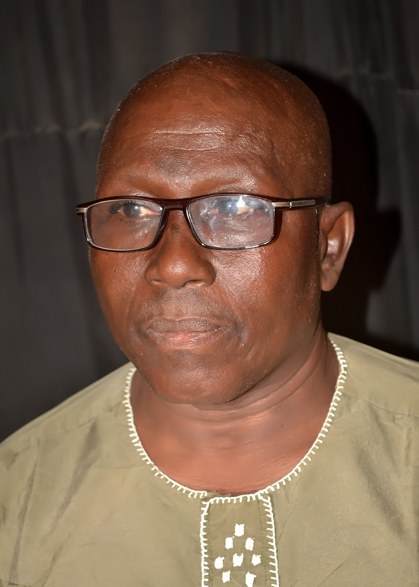
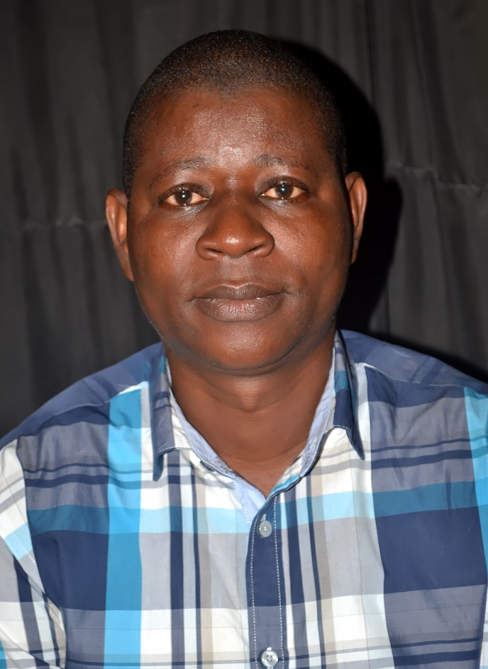
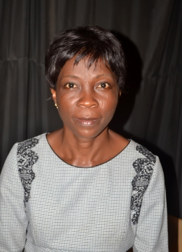

Mr. Basiru Gbolahan Osinfade, a chief lecturer, current Head of the Science Laboratory Technology (SLT) Department, Federal Polytechnic, Ilaro. He earned a B.Sc degree (Chemistry) from the University of Ilorin, an M.Sc degree (Organic Chemistry) from University of Ibadan. He lectures, supervises and examines research projects of National Diploma (ND) and Higher National Diploma students.
Science laboratory technology
Science Laboratory technology Department is one of the foundation academic department of the Federal Polytechnic, Ilaro. It was established in November, 1979. The department started off with a student population of eighteen (18), all in the first year of the then Nigerian National Diploma programmes under the able leadership of Dr. K. O. Jibodu as the pioneer Head of Department. The department had an academic staff strength of nine (9) and five (5) supporting staff during its first two years of existing. The first set of students in the programme proceeded to the Higher National Diploma without breaking the Polytechnic education into two tiers. Our first set of National Diploma students graduated at the end of the 1981/1982 academic session while the Higher National Diploma students graduated at the end of the 1982/1983 academic session. Presently, the Department staff strength has grown to forty four (44) Academic staff and ten (10) supporting staff with a substantive academic growth in our programs at Higher National Diploma Level with options in chemistry, Biochemistry, Microbiology, Environmental Biology and Physics with electronics. Over the years, with support of the institution the department have embarked on a rigorous staff development aimed at sharpening the research and teaching skills of staff by sponsoring them to attend conferences (both local and international), seminars, workshops, short and long term courses leading to award of higher degrees.
Entry requirement (ND)
WAEC,GCE[O/L],SSCE,NECO,NABTEB or equivalent with Credits in English Language, Mathematics, and two from Physics, Biology/Agric Science/Health Science and Chemistry, and any one from other subject from Technical Drawing, Metal or Wood Work, Basic Electricity, Geography, Further Mathematics and Fine Art. At least a pass in each of the three basic science - Physics, Biology, and Chemistry. And Relevant NTC/NBC &NVC Trades.
Entry requirement (HND)
Applicants seeking Higher National Diploma [HND] admission must possess the basic entry requirements for the National Diploma Programme. In addition, the applicant must possess the ND in Science Laboratory Technology obtained at not less than the Lower Credit level from the Federal Polytechnic, Ilaro or from any other Polytechnic accredited for the programme, or its recognised equivalent plus a minimum of one [1] year post qualification relevant industrial work experience. The candidate should also request his or her institution to forward his or her official academic transcript under confidential cover to the Registrar, Federal Polytechnic, Ilaro.
jamb cut off mark
computer science offivial cut off mark is 192
careers in computer science
Some careers in computer science are:
- Agro-Based Industries
- Breweries
- Breweriesr
- Cosmetics Industries
- Educational Institutions
- See more
meet our lecturers


Publications: Amusa, R. A. and Oyewande, E. O. (2016). Effect of Concentrations Variation of Aluminium on Energy gap and Optical wavelengths of AlxIn1-xSb Ternary Compounds Using Density Functional Theory. Journal of Physical Science and Innovation, 8 (2): 29 – 37. ISSN: 2277-0119 Amusa, R. A. and Oyewande, E. O. (2015). Investigations of Structural and Electronic Properties of III-Bi Semiconductor Binary Compounds. Journal of Physical Sciences and Innovations, 7 (2): 97-105. ISSN: 2277-0119.

Rasheedat Temitope Oyede earned a BSc (Hons) in chemistry from the University of Lagos, Nigeria in 1982 MSc (chemistry) in 1992 in the same University and PhD in Chemistry (Natural product) from University of Kwa-Zulu Natal, Durban, RSA in 2012. She teaches undergraduate courses in Natural products and stereochemistry, Medicinal Chemistry and inorganic chemistry. Her research interest is in Natural Product Chemistry.
Pikuda Olajumoke Olukemi earned a BSc (Hons) in Industrial Chemistry from the University of Ibadan, Nigeria in 1985 MSc (Chemistry) in 1991 from the same university. She teaches undergraduate courses in Physical Chemisty, Industrial Chemistry, Entrepeneurship Development etc . Her research interest is in Food Chemistry, Industrial Chemistry and Environmental Chemistry. She is a Member of Chemical Society of Nigeria. She has published her research work both in local and international journals. She is a regular attendee at conferences.

My name is Abiaziem, Chioma Vivian, a senior lecturer in the Department of Science Laboratory Technology, Federal Polytechnic Ilaro. I have lectured in the department for a period spanning over 16 years. I obtained my first degree from Chemistry Department, University of Jos, my second degree from University of Ibadan and my third degree in Covenant University Ota
Faparusi, Foluso is a Senior Lecturer in the Department of Science Laboratory Technology, The Federal Polytechnic Ilaro. He earned a B. Tech (2000) and M. Sc (2004) in Microbiology from Federal University of Technology, Akure (FUTA) and University of Ibadan (UI) respectively.His research interest includes: food safety, Lactic acid bacteria, toxigenic moulds and microbial enzymes.He has thirteen (13) journal publications to his credit and has also attended several conferences and presented papers.

Publications: Afolayan, A.O and Q.A .Adeniji (2018).Opto-Electrical Characterization of chemically Deposited Tin Bismuth Sulphide (TBS) Thin Film for Solar Energy Application. World Journal of Innovative Research (WJIR), 5(5).Afolayan, A.O and Q.A .Adeniji (2018).Performance Test of a Solar Refrigerator Temperature on Water, Milk and Honey. International Journal of NewTechnology and Research, 4(11), 34-38.

Faparusi, Foluso is a Senior Lecturer in the Department of Science Laboratory Technology, The Federal Polytechnic Ilaro. He earned a B. Tech (2000) and M. Sc (2004) in Microbiology from Federal University of Technology, Akure (FUTA) and University of Ibadan (UI) respectively.His research interest includes: food safety, Lactic acid bacteria, toxigenic moulds and microbial enzymes.He has thirteen (13) journal publications to his credit and has also attended several conferences and presented papers.
.jfif)
Publications: Abdulrasaq Oyedeji, BibilomoOdeyemi, SulaimonAdewuyi and Luqmon Azeez (2019). Physical Properties, Chemical Composition and Nutritional Quality Potentials of Lonchocarpus sericeus (Cube root) Seeds and Seed Oil. Walalaik Journal Science and Technology (WJST). Submitted. A.O. Oyedeji, T.A.M. Msagati, A.B. Williams and N.U. Benson (2019).Antibiotic residues in frozen poultry by a solid-phase dispersion method and liquid chromatography-triple quadrupole mass spectrometry. Toxicology Reports. TOXREP 2019 284.

Nasir OlaniyiIlelaboye Is a holder of Higher National Diploma(HND) In Science Laboratory Technology of The Federal Polytechnic, Ilaro, Ogun state, Nigeria and Post Graduate Diploma in Industrial Chemistry and Master Of Technology(M. Tech.) In Analytical Chemistry of The Federal University Of Technology Akure, Ondo State, Nigeria. He Is a Member of Nigeria Institute Of Science Laboratory Technology, And Institute of Science Laboratory Technology, London. He has been Lecturing In the department of Science Laboratory Technonolgy, of The Federal Polytechnic Ilaro, Ogun State Nigeria for over three decades. He Is currently a Senior Lecturer. He has to his credit several journal articles and Conference Papers. He Is happily married with children.

Mrs Bukunola Kehinde Oguntade is a seasoned teacher with nineteen years experience. She hold a BSc.(Hons) in Chemistry from the Old Ondo State University, Ado Ekiti and an MSc.in Analytical Chemistry from University of Ibadan. She has a Ph.D in Inorganic Chemistry from Rhodes University, Grahamstown South Africa. Her research interest is in Analytical and Inorganic Chemistry. She is happily married and blessed with three lovely children.

Publication: Adebisi, Evelyn U. and Sosanya Peter (2020). Evaluation of Selected Heavy Metals in Soil from an E-waste Dumpsite: A study of Alaba International Market, Lagos. A Paper Presented at the 2nd International Conference of the Federal Polytechnic Ilaro, Ogun State held Virtually between 10th – 11th November
_1574699205.jpg)
AbdulazeezAdewaleOderinde, has spent a substantial part of his life in Ilaro, Ogun State, where he had his SSCE, ND and HND. He was employed as a Technologist II, working in the Science Laboratory Technology Department, The Federal Polytechnic, Ilaro, in the year 2000. In the year 2004, he proceeded to OlabisiOnabanjo University, Ago-Iwoye, Ogun State, where he graduated with BSc Industrial Chemistry. Afterwards, he attended the University of Ibadan, Ibadan, Nigeria, where he bagged his MSc in Industrial Chemistry. As a technologist and later as a lecturer, his researches were centred around food chemistry, design and construction of laboratory equipment and industrial raw materials.
Publication: Adesipe TI and Omotayo OS. (2020). Biogenic Synthesis and Primary Characterization of Silver Nanoparticles Using Aqueous Extract of Unripe Banana Peel; In Vitro Assessment on Antioxidant and Antibacterial Properties. Trop J Nat Prod Res.2020; 4(11):990-994. doi.org/10.26538/tjnpr/v4i11.25.

I’m a graduate of The Federal Polytechnic, Ilaro (ND, SLT), Olabisi Onabanjo University, Ago-Iwoye (B. Sc. (Hons.) Microbiology) and University of Ibadan (M. Sc., Industrial Microbiology). I have proficient communication skills, I’m resourceful, hardworking, self-motivated and target-oriented.

Babatunde,RasaqAyinla hails from Ayetoro in Ogun State, he had his M.Sc in Solid State Physics in 2017 and B.SC in 2009 both from OlabisiOnabanjoUniversity, Ago Iwoye, Ogun State. He started his academic career in 2015 with Federal Polytechnic, Ilaro as an assistant lecturer and promoted to lecturer III in January , 2018. He has commenced his PhD programme in his chosen field of Solid State Physics inOabisiOnabanjo University, Ago iwoye. He is married and blessed with three children

As named above, I am a young, vibrant, passionate researcher and teacher who love to create impart and very skillful. I had Bachelor of Science degree in Biochemistry and Master of Science degree in Industrial Biochemistry. Recently, I contributed in developing course outline for Plant biochemistry ((STH 414) as local content), which is one of the courses I taught in first semester HND 2 biochemistry option

Publications: Bankole O.O and Omoyeni O.C. (2018). Effects of Folic Acid Supplementation on Serum Lipid Profile in Albino Rats. Presented at the Crawford University Science Conference and Fair (CUSCAF 2018) held on 23rd – 25th October, 2018.

I am a lecturer III with some years of experience. My research interests include air pollution, water quality and assessment, food safety and hygiene.

Remi-esan Ifelolu Adeseye is presently an Assistant Lecturer in the Department of Science Laboratory Technology, Federal Polytechnic Ilaro, Ogun State. He holds a BSc. Environmental Biology and Fisheries from Adekunle Ajasin University, Akungba Akoko, Ondo State. He is a member, Science Association of Nigeria (SAN) and Society for Experimental Biology of Nigeria (NISEB). His research interest is in the areas of Entomology, Fisheries biotechnology, Environmental biology. Remi-esan Ifelolu Adeseye is a regular attendee at conferences.

MAKANJUOLA, JOHN OLANREWAJU holds MSc in Environmental Science (Microbiology Option) in addition to PGD in Microbiology. He has about 20 years of industrial experience before venturing into academics. Presently, he lectures in the Department of Science Laboratory Technology. He has ten (10) academic Publications in Reputable International Journals and has attended many conferences, workshops and Seminars. He happily married with Children

Olasunkanmi Adedoyin Adetutu attended Ladoke Akintola University Ogbomoso,Oyo state where she obtained B.Tech (Hons) Biochemistry (2011). She then proceeded to Ladoke Akintola University Ogbomoso,Oyo state, where she obtained M.Tech in Biochemistry (2018). She is a member of Science Association of Nigeria and presently an Assisstant lecturer at Federal Polytechnic Ilaro, Ogun State

A smart, prolific and courteous graduate who has a track record of getting tasks done on time and to the highest standard. She is someone who takes great pride in her work, and who as a self-motivated team player is able to take responsibility for delivering to tight deadlines. She has a range of transferable skills gained through study and volunteering jobs and she is ever ready to learn and impart knowledge in pupils. She attends Ummul-Qurah High School, Ibadan for her secondary school education and the Federal University of Agriculture, Abeokuta where she bagged a Bachelor of Science degree Honour in Biological Sciences (Zoological option).

Publications: Ajibode, C.P andBabatola, O.M. (2018). Proximate Analysis and Phytochemical Composition of Cucumismelo (Golden melon). A paper presented at the 1stInternational Conference and Exhibition on Technology Innovation and Global Competitiveness, The Federal Polytechnic, Ilaro, 5th – 8th November, 2018.
I am a lecturer III with some years of experience. My research interests include air pollution, water quality and assessment, food safety and hygiene.
I am a lecturer III with some years of experience. My research interests include air pollution, water quality and assessment, food safety and hygiene.